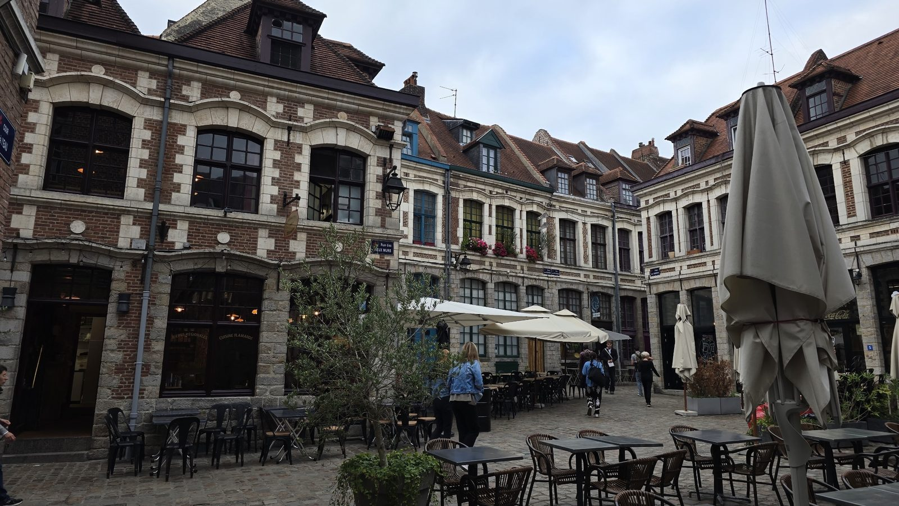
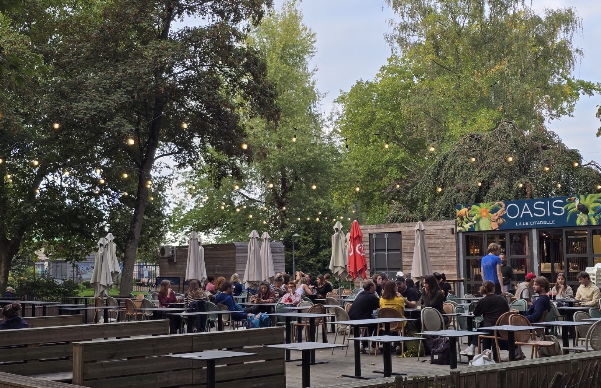

Restaurants and northern specialities
Lille's cooking is served in estaminets, small Flemish restaurants with old-fashioned interiors, generous plates and a long beer list. Here's what to order, and where.
What to try
- Carbonnade flamande: beef slow-cooked in dark beer
- Welsh: a slice of bread, ham and melted cheddar, sometimes maroilles depending on the place, usually with fries
- Potjevleesch: a cold terrine of several meats set in jelly
- Poulet au maroilles: chicken in a creamy sauce made with the region's strong cheese
- Meert waffle: filled with Madagascar vanilla, a Lille institution since 1761
Where to go
Au Vieux de la Vieille
The best-known estaminet in the city, on one of the prettiest squares in Vieux-Lille. All the northern classics are on the menu, along with a good twenty beers.

La Ch'tite Brigitte
Small room, rustic decor, nothing fussy. The house is known for its maroilles gratin. Book ahead, the place is small and often full.
Les Ptiots
Traditional home cooking. Rue de Gand is a little less touristy than the heart of Vieux-Lille, and the prices show it.

Le Barbier qui fume
Red brick and industrial fittings, wood-fired cooking with local produce. More modern than the classic estaminet, if you fancy a change.
Les Compagnons de la Grappe
A cobbled courtyard a couple of minutes from the Grand'Place, with a terrace you'd never guess at from the street. Northern cooking and a good wine list. People come here for the setting above all. Book in good weather, the terrace fills fast.
Tripletta
For a break from northern food. The pizzas are very good and the room is pleasant, brick and wood. It isn't the cheapest address on the street, worth knowing before you go.
Oasis Lille Citadelle
At the entrance to the park, facing the Deûle and shaded by trees. More of a garden café than a restaurant: you come for a simple lunch, or just a drink after a walk. The terrace is what brings people here, and it's full as soon as the sun comes out.

Practical notes
- Booking
- Advisable at weekends in Vieux-Lille, where places are often full
- Budget
- Rue de Gand costs less than the heart of Vieux-Lille
- To take home
- A Meert waffle travels well and makes a good present